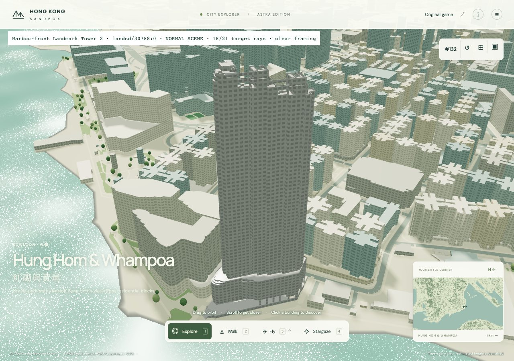
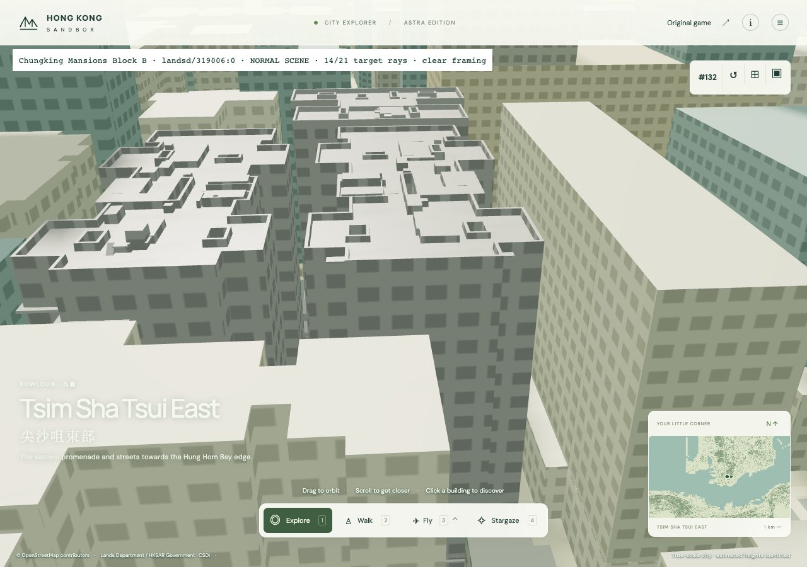
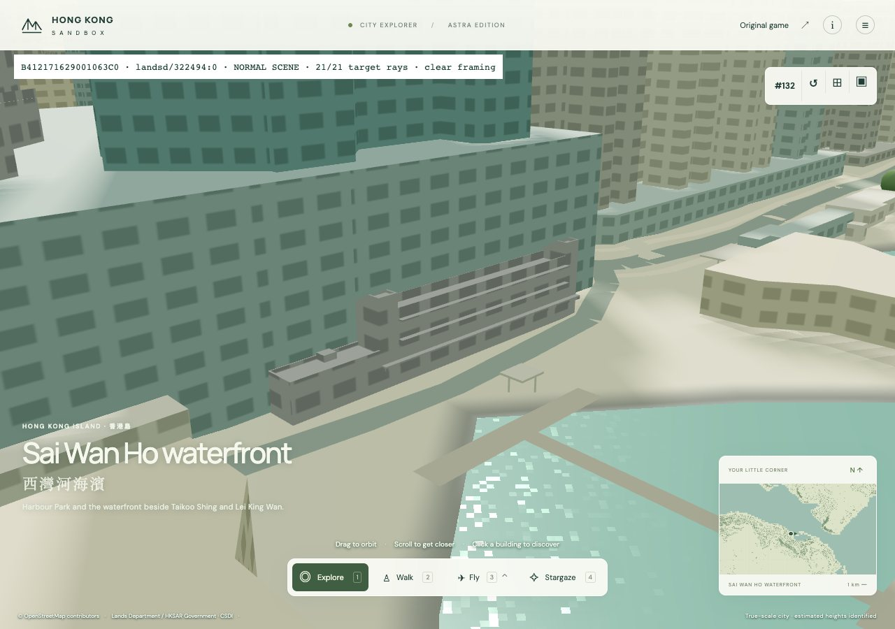
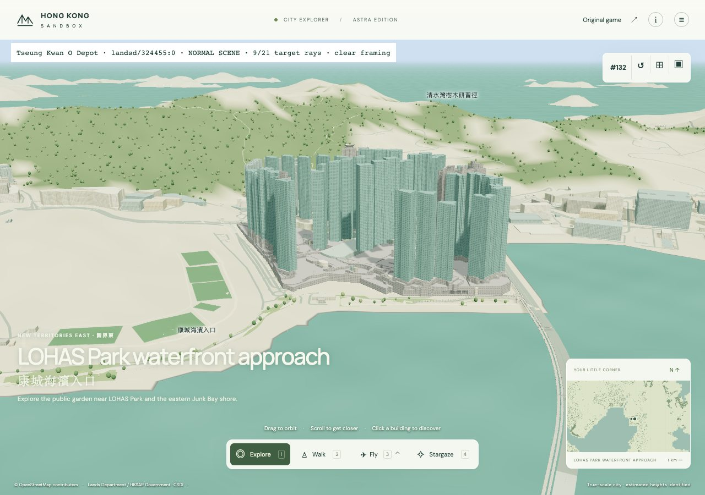
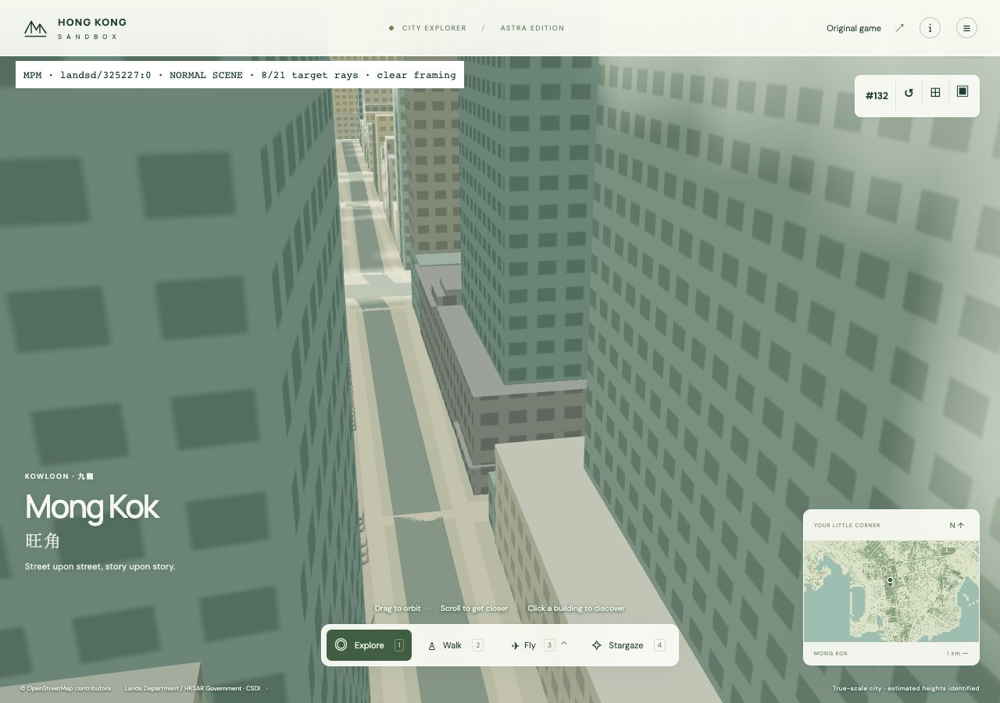
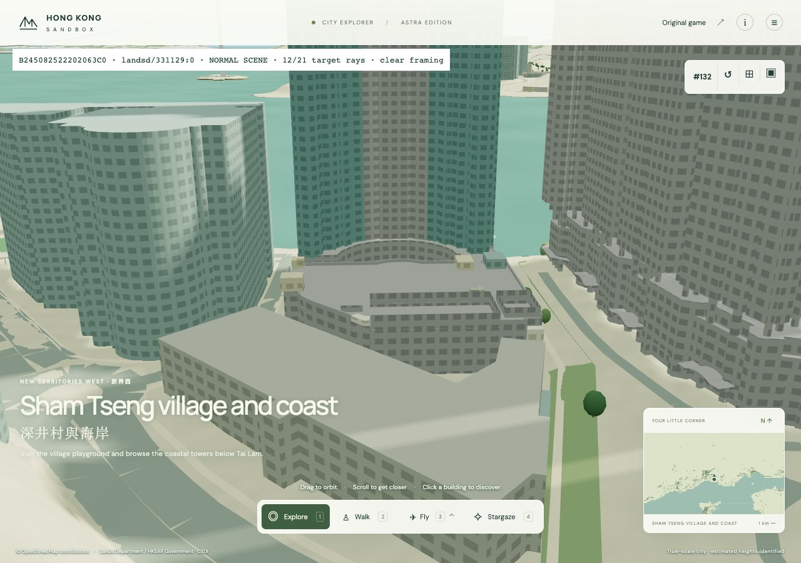

scene · native camera clear · 18/21 source rays

scene · native camera clear · 14/21 source rays

scene · native camera clear · 21/21 source rays

scene · native camera clear · 9/21 source rays

scene · native camera clear · 8/21 source rays

scene · native camera clear · 12/21 source rays